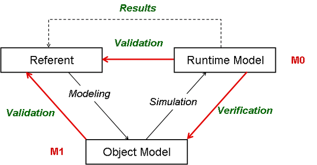
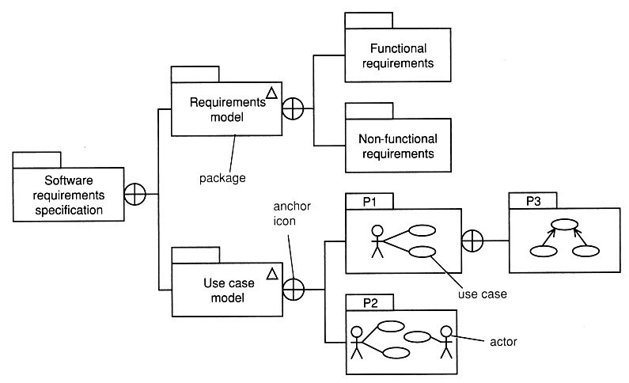
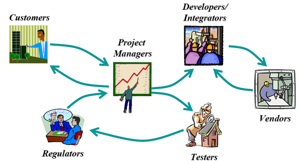
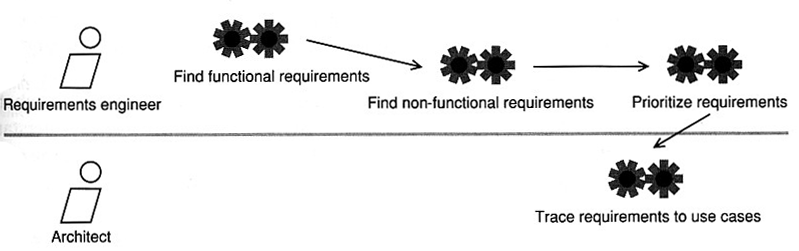
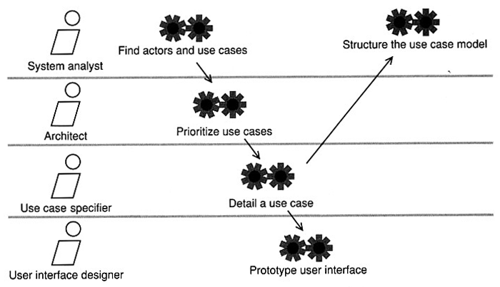
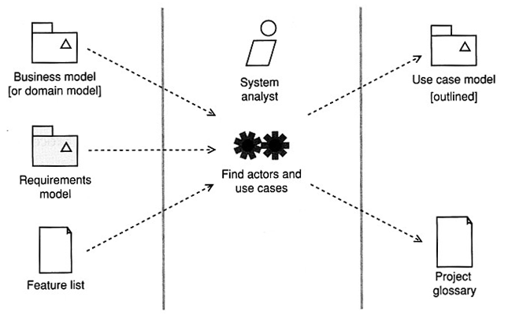
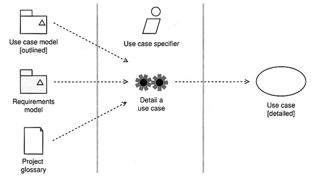

Software Engineering
Requirements WorkflowAgenda
- Modeling and Simulation Model
- SW Requirements - Metamodel
- Finding Requirements
- Requirements Workflow Detail
- Use Case Workflow Detail
- Use Case Modeling
- Detail a Use Case
Modeling and Simulation Model

- A referent in software is usually defined by a SW requirements
model.
Ways of using UML
- UML use case diagrams and use case realizations as sketch -
result of use case analysis
- UML use case diagrams and use case realizations as blueprint -
result of a use case design process based on use case analysis
- UML as programming language - UML diagrams are compiled directly
to executable code
- Requirements tell us what we should build, not how we should build.
- Use "shall" statements to capture requirements.
- Functional requirements - what the system should do, e.g.,
- Customers
- Products
- Orders
- Sales channels
- Payments
- Non-functional requirement - a constraint on the system, e.g.,
- Performance (wydajno¶æ)
- Capacity (przepustowo¶æ)
- Availability (dostêpno¶æ)
- Compliance to standards

In the requirements metamodel
- UML packages are grouping mechanisms
- small triangle indicates that the package contains a model
- the anchor icon indicates that the thing at the circle end contains the
thing at the other end of the line
- The term actor is used to describe the role played
by people or things that use the system.
- A role is like a hat that something wears in a particular context.
- A use case describes behavior that the system exhibits
to benefit one or more actors.
Finding Requirements
Requirements come from the context of the system you are trying to model.
This context include:
- direct users of the system
- other stakeholders (inni udzia³owiecy) (e.g., mangers, maintainers, installers)
- other systems with which the system interacts
- hardware devices with which the system interacts
- legal and regulatory constraints
- technical constraints
- business goals

Stakeholders involved in system acquisition - modeling needs to improve
communication
Unified Process (UO) Workflow Detail
A workflow detail shows us the workers and activities involved in a particular workflow. A workflow detail specifies (details) the component tasks and related
roles of a specific workflow.
- UP workflows details are modeled as workers (roles) and activities.
- Note that that this is only a approximation of the workflow in the
"average" case and might not be a particular exact representation of what
happens in practice.
- In the real world, you can expect some tasks to be done in a different
order or in parallel according to circumstances.
Requirements Workflow Detail

A requirement model workflow detail defining functional
and non-functional requirements.
Use Case Requirements Workflow Detail

A use case requirement workflow detail defining UML use cases.
Use case modeling typically proceeds as follow:
- Find a candidate system boundary - a box drawn around the use cases to
denote the edge of boundary of the system being modeled..
- Find actors.
- To find actors ask: Who or what uses or interacts with the
system?
- Find use cases:
- specify the use case
- identify key alternative flows
- Iterate until use cases, actors, and system boundary are stable with
meaningful relationships between actors and use cases.

Feature list is a set of candidate requirements that might take the
form of a vision document or similar.
Capture business language and jargon in the project glossary.
